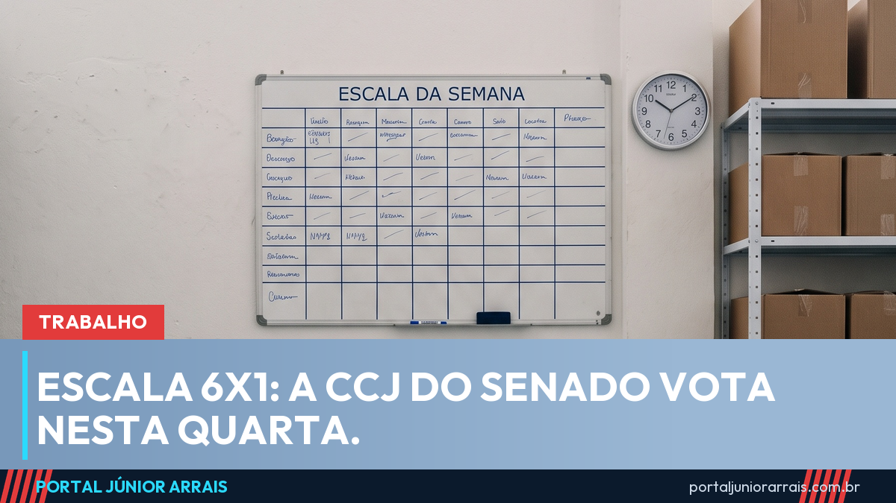

Escala 6x1: CCJ do Senado vota a PEC nesta quarta, mas aprovar ali não faz a regra valer

A Comissão de Constituição e Justiça (CCJ) do Senado deve votar nesta quarta-feira, dia 2 de setembro, a proposta que acaba com a chamada escala 6x1 — seis dias de trabalho para um de descanso. O texto é a PEC 221/2019, e o relator na comissão, senador Omar Aziz, já apresentou parecer favorável.
O que o texto muda
A proposta altera a Constituição em dois pontos que mexem direto na rotina de quem trabalha no comércio, em supermercado, em restaurante, em hospital e em serviço de limpeza:
- dois dias de repouso semanal remunerado, no lugar de um, sem redução de salário;
- queda gradual da jornada máxima, que hoje é de 44 horas por semana, passando para 42 horas e depois para 40 horas.
Na prática, é o fim do modelo em que a pessoa trabalha de segunda a sábado e folga só no domingo, quando não pega escala de fim de semana.
Aprovar na CCJ não é virar lei
Esta é a parte que mais gera confusão — e é onde aparece vídeo dizendo que "já está valendo". Não está. A CCJ é uma comissão, uma etapa dentro do Senado. Mesmo que o parecer favorável seja aprovado na quarta, o caminho continua:
- votação no plenário do Senado, em dois turnos;
- por ser mudança na Constituição, é preciso três quintos dos votos em cada turno;
- havendo alteração no texto, ele volta para a Câmara;
- promulgada a emenda, ainda há o prazo de transição que o próprio texto estabelece.
Ou seja: nenhum trabalhador passa a ter dois dias de folga na semana seguinte à votação da comissão. Quem promete isso está vendendo notícia que não existe.
O que muda no seu bolso quando valer
Enquanto a regra atual estiver em vigor, continuam valendo os direitos de hoje: descanso semanal remunerado, adicional de hora extra, adicional noturno e intervalos. Se a jornada semanal cair no futuro sem redução de salário, o valor da hora trabalhada sobe — e isso repercute em hora extra, em férias e no décimo terceiro.
Cuidado com golpe
A cada votação badalada no Congresso, surgem páginas cobrando para "cadastrar o trabalhador na nova jornada" ou prometendo indenização automática. Não existe cadastro nenhum e mudança na Constituição não gera pagamento retroativo por si só. Nenhum órgão público cobra taxa nem pede Pix para aplicar direito trabalhista.
Se a sua escala já hoje desrespeita descanso, intervalo ou pagamento de hora extra, isso não depende dessa PEC — procure um profissional de sua confiança para conferir os seus registros de ponto e os seus contracheques.
Conteúdo informativo — não substitui orientação individualizada sobre o seu caso.